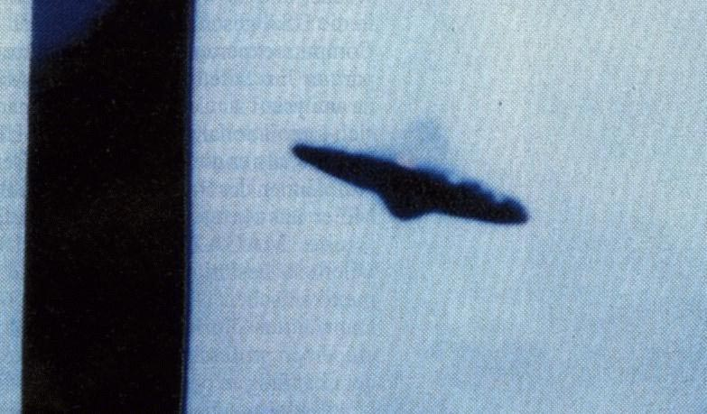

Des dizaines de témoins signalent un gigantesque triangle qui vole le
long de la vallée de Susquehanna (Pennsylvanie,
Etats-Unis) à une allure n'excédant pas celle de la marche. L'ovni, qui présente des lumières
blanches, est observé alors qu'il se déplace approximativement du Nord au Sud, empruntant une trajectoire
menant de Sunbury à Williamsport.
L'ovni est signalé à nouveau 2 fois. Des lumières rouges et vertes
semblent se mouvoir irrégulièrement autour de lui. Sa taille est évaluée entre 30 et 180 m de diamètre. Les
estimations de son altitude varient elles aussi largement selon les témoins : de 15 à 150 m de hauteur.
Tandis que l'ovni se trouve dans l'atmosphère, un fort grondement, semblable à celui des chutes du
Niagara est entendu. Puis l'ovni disparaît au-dessus de Bald Mountain, au Sud de Williamsport. Aucun
avion commercial ni militaire n'était censé circuler dans cette zone à cette période-là.
Signature du traité de Masstricht.
A Nyons (Drôme), 1 témoin en voiture observe 1 forme
ovale marron et orangée de la taille d'un hélicoptère et immobile. L'observation a duré environ 15 s environ
SEPRA: Cas classé C.
À Arudy (Pyrénées Atlantiques), 1 témoin et une
dizaine de ses invités peuvent voir 1 masse lumineuse se déplaçant lentement dans le ciel avec une trainée de
diverses couleurs. Aucun des invités présents ne sera auditionné. Au même moment dans le département, d'autres
témoins en voiture observent 1 phénomène similaire durant 30 à 40 s Chacun des témoignages est assez succinct mais la réunion de l'ensemble permet de penser qu'il s'agit d'une rentrée atmosphériqueSEPRA: PAN classé B.
Krikalev, parti de l'URSS, revient en Russie après 10 mois à bord de Mir.
Lors d'une émission de télévision, le directeur du SEPRA "oublie" de
mentionner la présence dans ses dossier des 2 cas insolubles d'ovnis Roussel 1994.
Au Havre (Seine Maritime), observation par un témoin
de 3 points lumineux formant un triangle. L'ensemble semble former un engin de grande dimension tournant
lentement sur lui-même. L'observation dure 20 mn environ GEPAN: Cas de type C.
Accord entre Boris Eltsine et George Bush sur la réduction de l'arsenal nucléaire.
0300:30 A Criquenot l'Esneval (Seine Maritime),
2 jeunes de 16 ans aperçoivent 1 objet de couleur rouge en forme de ballon de rugby entouré de flammes. Après
être resté stationnaire quelques secondes l'objet pique très rapidement vers le sol. Le lendemain, les jeunes
vont sur les lieux présumés de la chute et constatent des blés couchés avec des traces au sol. L'enquête a
permis d'expliquer les blés couchés et les traces par de fortes intempéries (plusieurs champs étaient dans le
même état) mais n'a pas permis de trouver d'autres informations sur ce phénomène SEPRA: Cas de type C.
1402:00 A Monestier de Clermont (Isère),
1 témoin observe pendant environ 1 mn 1 lumière blanche très forte dont l'intensité varie lentement. Puis en
compagnie de sa fille et durant 1 mn également il observe un phénomène ovale blanc très lumineux qui se déplace
lentement et sans bruit dans le ciel SEPRA: Cas classé C.
27 Le français Michel Tognini entame la mission Antarès (14 jours) à bord de Mir.
Aoû
10 Lancement du satellite
franco-américain Topex-Poséidon (étude des océans).
24 au 25vers minuit A Castres (Tarn), 2 jeunes en cyclomoteur observent au-dessus des arbres une lueur qui les
a "suivi" jusqu'au domicile de l'un d'eux. Cette lueur était blanchâtre de forme ovale et silencieuse. La météo
était clémente et le ciel clair. Les 2 jeunes ont été très effrayés, ce qui a motivé leur déposition mais aucune
autre information n'a pu être recueillie SEPRA: PAN classé C.
Sep
Début du mois23:00 Idem 14 juillet à 2 h.
16 Dans le cadre des manifestations de la fête nationale mexicaine, un défilé
d'avions de chasse est organisé au-dessus de la capitale, Mexico. Un objet mystérieux sort alors des nuages, en
arrière plan du défilé aérien, volant la vedette aux pilotes. L'événement qui s'était déjà déroulé l'année
précédente se répétera la suivante, lors d'un défilé d'hélicoptères.
25 Lancement de la sonde américaine Mars Observer. Elle explose lors de sa
mise en orbite.
0820:00 Une dame et son fils au volant reviennent en
voiture du village de Hotton (Belgique) : Après avoir quitté le village de Ny, en
direction d'Oppagne, nous avions roulé quelques centaines de mètres, lorsque mon fils m'interpelle pour me
signaler la présence d'une boule très lumineuse, orangée, se trouvant sur notre gauche. Cette lumière a
disparu très rapidement. Nous l'avons observée pendant une dizaine de secondes au maximum. Nous avions vite
oublié ce que nous avions vu lorsque, arrivés un peu avant le carrefour de la route Biron-Soy, 1 petit km plus
loin, mon fils aperçut une forme insolite venant de notre gauche, et me demande ce que cela peut être. Il
ralentit très fort la vitesse de la voiture et je lui demande plusieurs fois de stopper. Mais il n'osait pas
s'arrêter. Je continuai donc l'observation par le pare-brise. Le ciel n'était pas très sombre, car la pleine
Lune se trouvait sur notre droite, assez haute dans le ciel. Finalement, lorsque nous sommes arrivés au
carrefour Biron-Soy, mon fils a quand même arrêté le véhicule. L'engin se trouvait au-dessus de nous, entre 50
et 100 m. Un engin très gros, de forme triangulaire. Il avait une couleur gris-anthracite et sur le dessous
étaient disposées 2 rangées de lampes jaunes en forme de V. Il y avait sur l'arrière 1 ou 2 lampes rouges non
clignotantes, et une sorte de barre métallique, partant du milieu de la base vers le centre de l'engin. la
couleur de cette barre était plus foncée par rapport au reste de l'engin. Il n'éclairait pas les environs et
était parfaitement silencieux. Cela créait une ambiance oppressante, mais fantastique. Je n'ai pas relevé
d'épaisseur à cet objet, ni hublots ni portes, aucune fumée, aucune sensation particulière, sauf le fait de se
sentir tout petit à côté d'un tel spectacle. C'est comme si vous étiez sous l'eau avec une grosse raie
au-dessus de votre tête. C'est ce qui m'est venu à l'esprit. La structure de cet engin était parfaitement
découpée. Les 3 côtés égaux et pointus. Il se déplaçait latéralement. Ce qui me fait dire çà, c'est que le (ou
les) feu(x) rouge(s) semblai(en)t indiquer l'arrière de celui-ci, ainsi que la sorte de barre métallique s'y
trouvait. Ensuite il s'est déplacé très très lentement sur notre droite et au moment où j'ouvrais la portière,
sans l'avoir quitté des yeux, pas même une fraction de seconde, il n'y avait plus rien. C'est
incompréhensible. Il a disparu sur place, du moins c'est ce qui m'a semblé VOB II, p. 82 < Méheust 2000.
A Vagney (Vosges), 1 témoin circulant en voiture est effrayé par une grosse masse rouge
clignotante qui s'est approchée rapidement du témoin sans bruit. L'observation n'a duré que quelques s mais est
passée à environ 50 m du véhicule SEPRA: PAN classé D.
1604:30 Au Chaudron (Réunion),
1 témoin est réveillé par un fort bruit ressemblant à un réacteur d'avion avec 2 éclairs illuminant sa chambre.
Il observe alors 1 grosse boule lumineuse blanche très vive. Au bout de 10 s environ une villa proche est alors
éclairée de rouge et avec un nouveau bruit la lumière blanche a disparu. Cette villa inhabitée au moment des
faits n'a subi aucun dégât. Après la disparition de la lumière blanche, 1 point rouge a persisté au-dessus d'un
arbre et un léger brouillard a persisté à l'endroit de la boule blanche. Malgré le bruit évoqué aucun autre
témoignage n'a pu être trouvé. Cependant un voisin, bien que n'ayant rien vu, a constaté vers la même heure que
ses chiens étaient très apeurés SEPRA: PAN classé D.
A La Trinité (Martinique), 1 témoin en voiture observe 1 lumière verte se déplaçant très
rapidement. Malgré l'aéroport proche le témoin pense qu'il ne peut s'agir d'un aéronef. Bien que le témoin se
trouvait en compagnie de son conjoint, 1 seul témoignage a été enregistré SEPRA: PAN classé C.
Début du moisvers 18:00 A Saint-Martin-en-Bière (Seine-et-Marne),
MmeLe Mee circule sur la D50 (reliant Arbonne à Fleury-en-Bière) quand
elle voit à pas plus de 30 m d'elle une "boule" de couleur blanchâtre ou blanc-bleuté, "opaline", qui virevolte
autour du 1er noyer. Plus loin et beaucoup plus haut dans le ciel, en direction approximative de
Melun, 2 autres "boules" de même couleur évoluent elles aussi à toute vitesse et en tous sens. L'observation
dure 30 mn environ LDLN n° 319, pp. 19-21.
Observation du 8 décembre au Mexique

A Puebla (Mexique), observation (ci-contre).
Mer 0921:00 A Château d'Oléron (Charente Maritime),
1 gendarme adjoint au chef de brigade ainsi que son épouse observent un phénomène lumineux de grande ampleur
avec 5 ou 6 rectangles éclairés et alignés ainsi que 2 éclairs bleus particulièrement intenses, à chaque
extrémité de la rangée de rectangles. L'observation n'a duré que quelques s. Le conducteur a freiné et le
véhicule qui le suivait a également ralenti mais ce 2nd véhicule n'a pu être retrouvé SEPRA: Cas classé D.
Autour du 23 durant plusieurs nuits A Saint Dié (Vosges), 1
témoin observe de chez lui avec son épouse plusieurs points très lumineux et de couleur changeante. Lors d'une
observation il précise que de brusques changements de positions sont observés. L'enquête montrera qu'il
s'agissait probablement de confusion avec des étoiles identifiées comme Aldébaran et Gamma. Les brusques
changements de position signalés n'ont pu être confirmés SEPRA: Cas de type B.
Mort de Villa Boas. Des rumeurs indiquent
alors qu'il se serait rendu aux Etats-Unis au début des années 1960s après y avoir été invité pour étudier les
restes d'une soucoupe volante détenue par les militaires. La société Brésilienne d'étude des soucoupes
volantes produit la lettre d'invitation. Le fils de Villas Boas confirme quant à lui que son père était bien parti
aux Etats-Unis à cette époque, mais qu'il a toujours refusé de dire à sa famille ce qu'il y a fait.
Le MIT organise une conférence sur le thème des enlèvements extraterrestres.